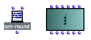
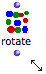
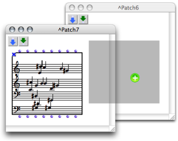
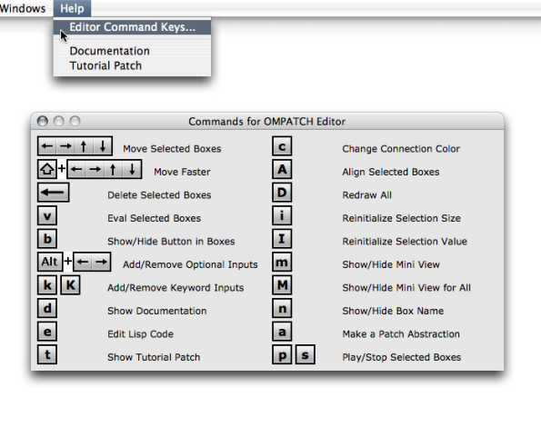

OpenMusic DocumentationHiérarchie de section : OM 6.6 User Manual > Visual Programming I > Elementary Manipulations
OpenMusic DocumentationHiérarchie de section : OM 6.6 User Manual > Visual Programming I > Elementary Manipulations
Navigation : page précédente | page suivante
Attention, votre navigateur ne supporte pas le javascript ou celui-ci à été désactivé. Certaines fonctionnalités de ce guide sont restreintes.
Elementary Manipulations
This section provides information about specific commands regarding the manipulation of items within patches. Specific details are given for each box type in Boxes and Patch Components.
Selection and Resizing
Selection
Boxes are selected using standard mouse selection. A selected box shows a bold border.
|

Selected boxes.
|
Most patch editor commands apply to every selected boxes in the current window.
Resizing
 |
|
Move / Copy / Align
Move
To move an item around in a patch editor :
- drag and drop it with the mouse
- select it and use the four
→keys. AddSHIFTto move items faster.
Drag and Drop / Copy
Boxes can also be moved or copied from a patch editor to another.
- Drag and drop the item to move it.
- Add the
Altkey to copy it. - Use the usual commands and shortcuts –
Edit / Copy,Paste,Duplicate...

Copying a chord-seq box to another patch editor.
Align
To align all selected boxes automatically, press SHIFT + a .
Delete
To delete selected boxes :
- press
Backspace, - select
Edit / Clear - Cutor pressCmd+x.
Undo
The Undo command can be used for restoring deleted boxes – not their connections. It can only apply to the last action that was executed.
To cancel an action :
- select
Edit / Undo - press
Cmd+z.
Tip : Patch Editor Commands
To display an overview of the main patch editor commands :
- choose
Help / Editor Command Keys
- type
hin an open patch editor.

Références :
Plan :
Navigation : page précédente | page suivante
A propos...(c) Ircam - Centre Pompidou